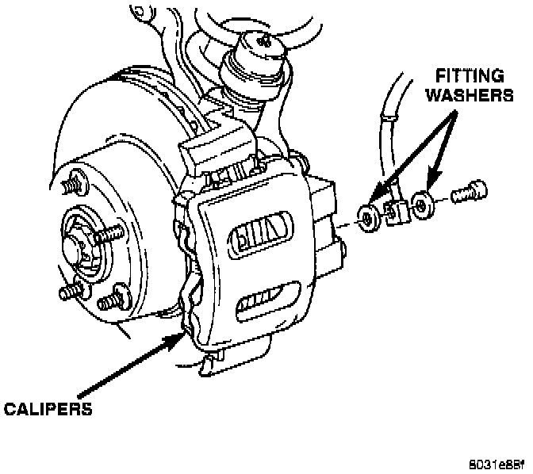
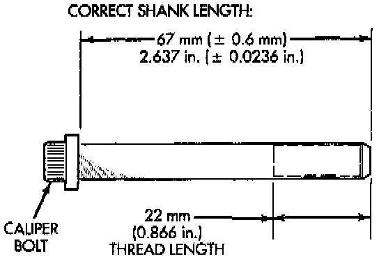

Front
REMOVAL1. Raise vehicle and remove front wheel and tire assemblies.

2. Remove and discard brake hose mounting bolt.
3. Remove caliper mounting bolts.
4. Rotate caliper rearward with pry tool if necessary. Then rotate caliper and brake shoes off mounting ledges.
5. Remove caliper from vehicle.
INSTALLATION
1. Install brake shoes in caliper.
2. Connect brake hose to caliper but do not tighten fitting bolt completely at this time. Be sure to use new gaskets on bolt to avoid leaks.
3. Install caliper. Position mounting notches at lower end of brake shoes on bottom mounting ledge. Then rotate caliper over rotor and seat notches at upper end of shoes on mounting ledge.
4. Coat caliper mounting bolts with silicone grease. Then install and tighten bolts to 10-20 Nm (7-15 ft. lbs.).
Mounting Bolt Dimensions:

CAUTION: If new caliper bolts are being installed, or if the original reason for repair was a drag/pull condition, check caliper bolt length before proceeding. If the bolts have a shank length greater than 67.6 mm (2.66 inches), they may contact the inboard brake shoe causing a partial apply condition.
5. Position front brake hose clear of all chassis components and tighten caliper fitting bolt to 31 Nm (23 ft. lbs.).
CAUTION: Be sure the brake hose is not twisted or kinked at any point. Also be sure the hose is clear of all steering and suspension components. Loosen and reposition the hose if necessary.
6. Install wheel and tire assembly
7. Fill master cylinder and bleed brake system. Service and Repair